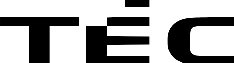

<div class="header">
  <div class="header-wrapper">
    <button id="sidebar-btn" (click)="toggle_sidebar()" >
      <svg focusable="false" viewBox="0 0 24 24" xmlns="http://www.w3.org/2000/svg%22%3E">
        <path d="M3 18h18v-2H3v2zm0-5h18v-2H3v2zm0-7v2h18V6H3z"></path>
      </svg>
    </button>
    
    <div class="navbar-wrapper">
      <p>Dokumentation</p>
      <button>Create</button>
      <button>Docs</button>
    </div>
    <input type="text" id="search-input" placeholder="Search">
  </div>
</div>

<sidebar *ngIf="active" (output)="toggle_sidebar()"></sidebar>
